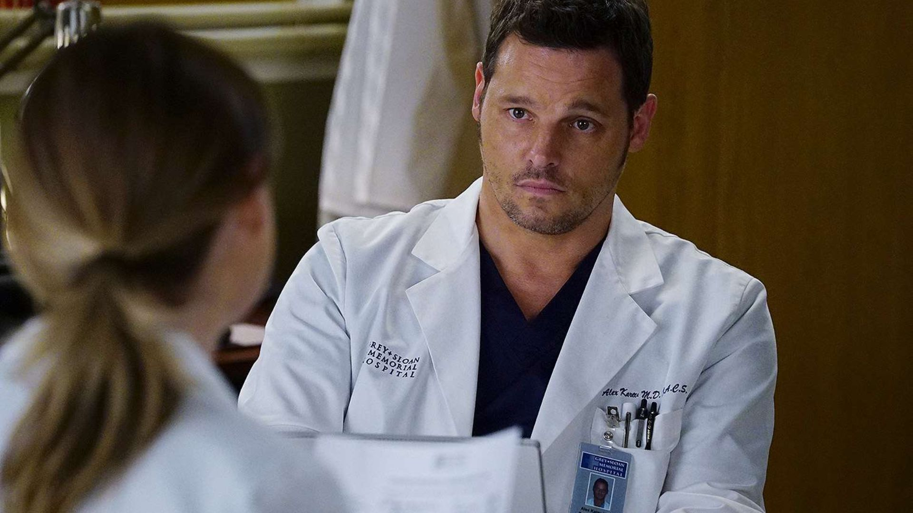
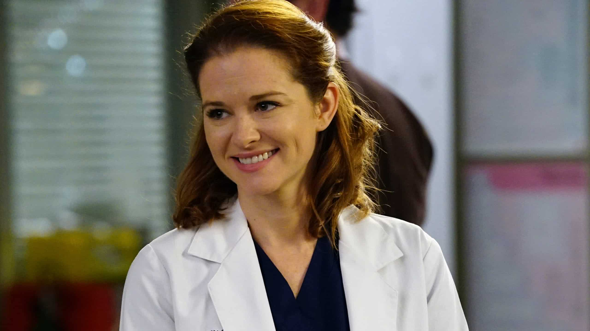

- Nem sempre a série se chamou "Grey’s Anatomy". No início, ela quase foi batizada
de “Surgeons” ("Cirurgiões", em português) e também “Complications” ("Complicações").
- O personagem Alex Karev não existia no roteiro original.
As primeiras cenas com o ator Justin Chambers - que, na época, estava no elenco da série de investigação criminal
"Cold Case" -, foram gravadas e adicionadas mais tarde, depois que o episódio piloto já tinha sido finalizado.

- Sandra Oh, que interpretou a inesquecível Cristina Yang, fez primeiro o teste para o papel de Miranda Bailey.
No entanto, a própria atriz conta que amou a personagem da Dr. Yang, e perguntou se poderia fazer o teste para ela também.
- As cenas médicas da série são levadas a sério. Os vários médicos consultores, além de ajudarem a construir os casos médicos,
também orientam e adicionam as terminologias médicas adequadas para os roteiristas.
- Os órgãos utilizados em cena são de vaca. O sangue, por sua vez, é feito de gordura de frango e gelatina vermelha.
- Meredith aparece em todos os episódios da série, com a exceção de um episódio na 13ª temporada, em que ouvimos apenas a sua voz na narração.
- Sarah Drew, atriz que interpretou April Kepner, engravidou de verdade durante as filmagens.
No entanto, o mais curioso é que ela deu à luz apenas algumas horas depois de gravar a cena em que o bebê de April nasce!

- O 16º episódio da segunda temporada, intitulado “It’s the End of the World”, foi o mais assistido de toda a série,
com mais de 16,5 milhões de espectadores.